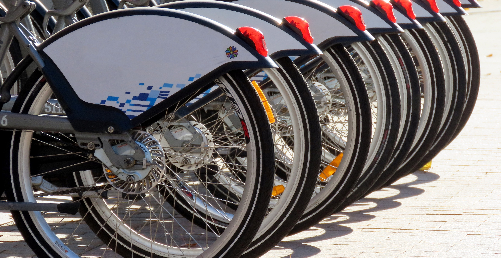

Cyclistic: Data Analysis of a Bike-Share Company
Tools used: R Programming, Tableau

In 2016, Cyclistic launched a successful bike-share offering. Since then, the program has grown to a fleet of 5,824 bicycles that are geotracked and locked into a network of 692 stations across Chicago. The bikes can be unlocked from one station and returned to any other station in the system anytime. Until now, Cyclistic's marketing strategy relied on building general awareness and appealing to broad consumer segments. One approach that helped make these things possible was the flexibility of its pricing plans: single-ride passes, full-daya passes, and annual memberships. Customers who purchase single-ride or full-day passes are referred to as casual riders. Customers who purchase annual memberships are Cyclistic members. Cyclistic's finance analysts have concluded that annual members are much more profitable than casual riders. Although the pricing flexibility helps Cyclistics attract more customers, the Marketing director believes that maximizing the number of annual members will be key to future growth. Rather than creating a marketing campaign that targets all-new customers, the Marketing director believes there is a very good chance to convert casual riders into members, and notes that casual riders are already aware of the Cyclistic program and have chosen Cyclistic for their mobility needs.
Goal
Design marketing strategies aimed at converting casual riders into annual members. In order to do that, however, the marketing analyst team needs to better understand how annual members and casual riders differ, why casual riders would buy a membership, and how digital media could affect their marketing tactics. The Marketing team are interested in analyzing the Cyclistic historical bike trip data to identify trends.
Data Analysis Process
Please check the GitHub repository for the full data analysis process, which includes data cleaning, data exploration, and data visualization.